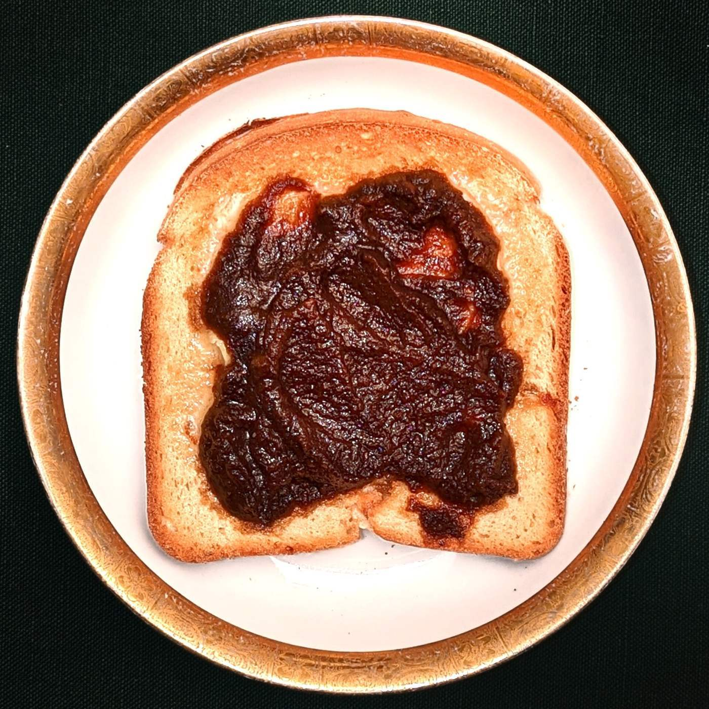

1 網 / あみ
メニュー
メニューと価格は準備中です。ここでは「1 網」の受け持ちとして、掲載の枠だけを先に用意しました。



1 網(あみ)
網は、通すところ
茶こしの網は、通すものと残すものを分ける部分です。このページでは、お店からメニューをお預かりしたら、その内容をここに並べます。いまは掲載の枠だけを用意しています。
01ドリンク準備中
02フード準備中
03スイーツ準備中
04価格準備中
掲載する項目やカテゴリは、お店のご希望に合わせて変更します。提供内容を示すものではありません。